Casino platform demo Jackpot
The app is built and published. This document shows what we started from, what got decided along the way, and how the result looks next to the design, section by section.
Sections 01–12 are the history: what was measured in the Figma file before any code was written, what decisions were taken, and what came out of the checks that ran before the build. Every question raised there has already been answered; they are kept as a written trail. Section 13 is the comparison itself: twenty-six Figma / implementation comparisons, plus an accessibility sheet. Section 14 is what came out of looking at the site in Chrome on 9 September: five defects found and fixed, with the after screenshot next to the Figma node.
The goal and where things stand
What we want, what exists, what we deliver. No assumptions — the state of the repo was read straight off the disk.
Empty directory
D:\jp-platform contains only .git (zero commits) and
.claude\settings.json. There is no code to reuse and none to migrate.
Everything that follows gets written from scratch.
The Figma file
A single page, Platform. Section 1 holds the desktop and its states, section 2 holds mobile. Plus two UI Kits, Desktop and Mobile, which document colors, typography and button states.
An app you can run
npm run dev starts the whole platform: desktop, mobile,
working search, switching between prelogin / postlogin / VIP, the Balance
and Personal information panels. Local mock data, no backend.
What we actually checked
A green dot means measured: we ran the query and read the result. An amber dot means we still don't know, and we're not guessing.
Figma has no design tokens
Querying the variables on desktop-main returns a single value,
BG/Quaternary: #0D1420. On UI Kit — Desktop it returns nothing.
All the colors are fills hardcoded into layers. In plain terms: if the designer changes
the card background tomorrow, the change doesn't propagate anywhere on its own — it has to be read again.
The UI Kit, on the other hand, is written like documentation
The Colors frame has five groups, and every swatch already carries a semantic name: Page Background, Card Background, Blue Primary, Gold Nav Active. Those names become the Tailwind token names directly, so the mapping isn't something we invented, it's transcription. The full palette is below, in section 03.
The fonts are all open-source
Inter, Roboto Flex, Bricolage Grotesque. All three are Google Fonts,
so they load through next/font/google with no license to buy and no files to host.
The two "mob main" screens are not a duplicate
We compared the two subtrees line by line. Out of 894 lines of structure, exactly one thing
differs: the header. 1:6978 has Header (Pre-login) with two Sign In buttons,
while 1:5720 has Header (POST-login) with the green balance button and a plus.
The rest is identical. So mobile doesn't have two pages, it has one page with two headers — exactly like desktop,
and the mobile work doesn't double.
The design has no distinct image per game
PopularGames and CrashGames both contain the same six "Gates of Olympus 1000 / Pragmatic Play" cards. The provider row has five unique logos repeated to fill sixteen slots. Concretely: if I simply download what's in Figma, I get one game image, not sixty — and a demo where every game looks the same reads as a defect, not as design.
I don't know yet what shape the asset export takes
I haven't run the download yet. I don't know whether the provider logos come out as SVG or PNG, at what resolution, or whether the file names collide with each other. That's why the assets phase is sequential and kept separate: if it comes out badly, redoing it is cheap and it blocks nobody.
The design system, pulled out of the UI Kit
The colors below are read out of the Colors frame in the Desktop UI Kit, not picked by me.
The page you're reading right now is painted with exactly these values — that's the first check that the palette holds.
They become tailwind.config.ts, the single source of truth for colors in the project.
A name given to a color, used instead of the value
A design token is quite simply a name. Instead of writing the color
#151624 in the code, you write bg-card. The name means "the card background", and somewhere,
in a single file, it is written down once that bg-card means #151624.
The concrete example from this project. The Gates of Olympus 1000 game card in the Popular row sits on the #151624 background. Exactly the same color is on the card in Crash Games, the card in Must Play Slots, the Balance panel that opens from the header, the jackpot menu on mobile and every block in the footer. That's a few dozen places.
Without a token
The color is written by hand in every component. Tomorrow the designer says "the cards are too dark, make them #1A1B2B". You have to find every occurrence and change them one by one. A few will be missed — and they'll be missed exactly in the places nobody opens often, meaning the search with no results state or the VIP menu.
With a token
All those places write bg-card. The change is one line, in
tailwind.config.ts. There is no "I forgot one", because there are no copies —
there is one definition and dozens of references to it.
Where risk R-2 comes in. Normally those names live inside Figma itself,
as variables, and the code can read them automatically. Here they don't — we checked,
the file has a single variable. What we have instead is the UI Kit, where the designer wrote the names
as text under each color square: Page Background, Card Background,
Gold Nav Active. So the names exist and they're good, but the link between Figma and code
is a document we write ourselves (docs/tokens.md), not something that syncs on its own.
If that document turns out sloppy, the agents building the components start writing
colors by hand again — and we're back to exactly the left-hand column.
Fonts: Inter, Roboto Flex, Bricolage Grotesque.
The only value that shows up as a Figma variable, BG/Quaternary #0D1420, doesn't appear
in any of the five groups — we treat it as a one-off exception, not as a token.
What the design shows
Three screenshots taken straight from Figma. They're also the evidence for the observation about images in section 02.


How the design gets into code
One single direction of flow. Every box has a single owner, and everything to the right of a box only reads from it, never rewrites it.
The part that matters: the registry in the middle. Everything that describes a screen lives there as data. That is why a new screen from the designer touches neither the page, nor the tokens, nor the existing components.
The main decision: 12 rows become data, not code
Of the 15 content rows on desktop, 12 are exactly the same pattern: a header with an icon, a title and a “See All” link, followed by a grid of cards. Only the title and which games go in the grid change.
12 hand-written components
Every row, its own file. When the designer asks for the section titles to be 2px bigger, it changes in twelve places. When they add a new row, you write a thirteenth, almost identical component.
// 12 almost identical files PopularGames.tsx NewGames.tsx CrashGames.tsx MustPlaySlots.tsx … eight more …
One component + one registry
A single ContentRow, fed by a list of descriptions. A new row means
four lines of data. A style change happens once, in one place.
// src/lib/sections.ts { kind: 'games', id: 'crash', title: 'Crash Games', grids: 1, filter: { tag: 'crash' }, figmaNodeId: '1:3230' }
The figmaNodeId field is not decoration. It is what turns the visual check from a chore
of twenty manual comparisons into an automatic loop: for every entry in the registry,
take the Figma screenshot, take the browser screenshot, put them side by side.
The three big banners
Tournament, Lottery and Wheel are all 1280×260 and share the same anatomy. One component, three variants.
Application state
A single Zustand store holds the sign-in mode, the search state and which panel is open. No provider, so the rest of the page stays server-rendered.
The data
60 games in JSON, re-sliced into rows by filters. The “See All (206)” label stays exactly as in the design, without us inventing 206 records with broken images.
Orchestration: a sequential spine, then a fan-out
Eight agents cannot write the same shared components in parallel. The answer is not isolating them in separate copies of the repo, it is splitting ownership by file: each agent gets the exact list of files it is allowed to create and the list of the ones it is only allowed to read. The sets do not overlap, so there is nothing to reconcile at the end.
Decided in review: the eight do not all start at once, they go in two waves of four. Wave one takes Header, Hero, Rows and Footer — the areas that touch the most primitives. If something comes out wrong there in the game card or the button, it gets fixed once, not eight times.
Why phases 1–3 cannot run in parallel: the tokens and the primitives are the shared vocabulary.
Two agents reading the UI Kit on their own will christen the same gray bg-surface once
and bg-card the next time; two agents writing the game card produce two different game cards.
Serializing the foundation is exactly what keeps the fan-out of eight free of conflicts.
Who owns what, in phase 4
They all import from the tokens, types, store and primitives. None of them modifies any of it.
| Wave | Agent | Area | Files it creates | Figma nodes |
|---|---|---|---|---|
| 1 | 6 | Header | layout/Header.tsx + 3 variants | 1:2432, 1:4244 |
| 1 | 7 | Hero, ticker, category bar | layout/HeroBanner · RecentWinsTicker · CategoryNavBar | 1:2433, 1:2435, 1:2500 |
| 1 | 8 | The game and provider rows | sections/ContentRow · ProviderRow | 1:2592, 1:2620, 1:2649 |
| 1 | 10 | Footer | layout/Footer.tsx | 1:3666 |
| 2 | 9 | The promo banners | sections/PromoRow + PromoBanner variants | 1:3427, 1:3524, 1:3580 |
| 2 | 11 | Search, every state | all of components/search/ | 1:4314, 1:4321, 1:4334, 1:4479, 1:4611 |
| 2 | 12 | The header panels | panels/BalancePanel · PersonalInfoPanel | 1:4116, 1:4153 |
| 2 | 13 | Mobile | layout/MobileNavBar · MobileShell · panels/JackpotMenu | 1:8235, 1:8751, 1:8260, 1:8503 |
We do not use isolated copies of the repo
It looks like the safe choice for eight parallel agents, but here it does damage. Every copy would need its own dependency install — eight installs of a few hundred megabytes each, before anyone writes a single line. And with no dependencies installed, an agent cannot even run the type check, which means it loses exactly the control that justifies working in parallel. Splitting ownership by file already solves the collisions, so isolation would pay a steep price for a problem that does not exist.
When the designer adds screens
You said more screens are coming. The architecture is built around that assumption, not bent to fit it afterwards.
- A new games row — you add four lines to the registry. Zero new components, zero files touched. Five minutes.
- A new standalone screen — one entry in the screen registry, with the Figma node and the viewport, plus a component assembled from primitives that already exist.
- Verification happens by itself — the internal
/dev/screenspage automatically renders any entry in the registry, with the Figma node attached, so the comparison loop picks it up without any change at all.
Here is what makes the difference: a new screen never touches the colour configuration, the state store, the app layout or the existing components. If they ever do have to be touched, it means the designer has introduced something genuinely new — and then it deserves a conversation, not an improvisation.
How we prove it looks like the design
Five gates, from the cheapest to the slowest.
- Type checking and lint, after every agent. It writes nothing to disk, so it can run in parallel with no risk.
- Colour discipline — a lint rule rejects any hex code written straight into a component. If someone writes
#151624instead of using the token, it fails at lint, not at human review. - Full build and starting the server, in the sequential phases only. Zero errors in the console, zero hydration warnings.
- Visual comparison per section — for every entry in the registry: the Figma capture, then the browser at 1440 or 390 pixels, then the real screenshot, placed side by side. The deviations turn into fixes in the files owned by the agent for that area.
- Interaction test — switching prelogin → postlogin → VIP; typing
zeufor suggestions,xyzzyfor the no-results state, clearing the field for the initial state; opening and closing both panels; all three jackpot menus at 390 pixels.
Risks
Five things that can wreck the execution. The first one is the most likely and it blocks everything, so it gets checked before any agent starts.
| ID | Impact | What can happen | What we do |
|---|---|---|---|
| R-1 | Blocks everything | The scaffold command refuses the directory, because .claude is not on its exception list. A failure in phase 0 leaves every agent stuck. |
Scaffold into a sibling directory, then move the contents over the existing .git and .claude. It gets tested first. |
| R-2 | It spreads | With no variables in Figma, naming the tokens is a judgement call made once. If the mapping table comes out thin, the eight downstream agents start inventing colours. | The docs/tokens.md table is a mandatory deliverable of phase 1, with at least one row for every swatch in section 03. |
| R-3 | Unknown | The shape of the asset export has not been checked — I do not know whether the logos come out as vectors or raster, at what resolution, and whether the names collide. | The assets phase is sequential and isolated, with an indirection file between names and code, so renames do not propagate. |
| R-4 | Visual | The source has a single game image. The generated placeholders can look like missing images rather than a decision. | Decided in review: gradients from the UI Kit palette — gold #F0C775 → #C6903D and orange #F8B900 → #E67508 — with the game title on top. It reads as a brand decision, not as a missing image. |
| R-5 | Phantom errors | Two agents running a build at the same time corrupt the compilation cache and produce errors that have nothing to do with the code that was written. | The ban is written into the prompt of every parallel agent, not just into the plan. Their only check is the typecheck. |
What happens before construction starts
You ticked all five risks. Each one gets its own check and its own report, before phase 0. No agent starts until you have seen the results. Every identifier below gets exactly one verdict — handled, deferred with a reason, or rejected with a reason.
| ID | What I actually check | What you see |
|---|---|---|
| R-1 | I run the scaffold command in a test directory and check whether it refuses because of .claude. If it refuses, I also test moving the contents over an existing .git. | The command output, exactly as it appeared. |
| R-2 | I write docs/tokens.md with all 26 colours from section 03, each one with its Figma name and its Tailwind name. | The complete table, before the first component. |
| R-3 | I download the assets of a single node — the provider row — and look at what came out: format, resolution, file names. | The list of resulting files. |
| R-4 | I build three test cards with the chosen gradients and put them next to the real card from Figma. | A visual comparison, before applying them to everything. |
| R-5 | I write the full prompt for one phase 4 agent, with the list of allowed files and the build ban. | The raw prompt, so you can judge for yourself whether the rule is clear. |
The decisions taken in review
The three open questions have been answered. I am leaving them here as a written trace, with what each one means in execution. There are no open questions left in this plan.
Phase 4 goes in two waves of four
First wave: Header, Hero, Rows, Footer — the areas that touch the most primitives.
Fixes to the game card or the button happen once, and then the second wave starts:
Banners, Search, Panels, Mobile. Concretely: if GameCard has the wrong margin,
you fix it in one place, not in eight parallel branches that have already built on top of it.
Cards with no real image get gradients from the UI Kit palette
Gold #F0C775 → #C6903D and orange #F8B900 → #E67508, with the game title on top. The colours are the ones from the Gradient Colors section of the UI Kit, so the grid stays on brand and does not look like images that failed to load.
These are sketched straight in here, in HTML, so you can see the direction right now. The final versions, built in the project and placed next to the real card from Figma, come with the R-4 risk check, before phase 0.
The /dev/screens page stays visible in the demo
It becomes the designer's working surface, not just an internal test tool. He opens one address and sees every screen in the registry, each with the Figma node identifier next to it — including the screens he adds himself along the way, without us doing anything. The practical consequence: when he adds a new screen, the visual check picks it up automatically.
The checks before phase 0 — results
The five risks, actually checked. Each one has a verdict and the evidence for it. Two of them came out differently from what the plan said — I have flagged those explicitly.
The scaffold really does refuse the directory — and the move had a flaw
I created a test directory with .claude and .git inside it and ran the command.
It refuses, exactly as suspected. .git passes, .claude does not:
The directory r1-probe contains files that could conflict: .claude/ Either try using a new directory name, or remove the files listed above.
What I had not anticipated: the move from the sibling directory fails too, because
create-next-app creates its own .git in the scaffold,
and you cannot write over the existing .git:
Move-Item : Cannot create a file when that file already exists. (C:\...\r1-scaffold\.git:DirectoryInfo) [Move-Item], IOException
The corrected procedure — you delete the scaffold's .git first, then move — has been tested
and it passes: the final directory contains .claude intact, the original .git intact,
plus everything Next generated.
The two UI Kits contradict each other on the same names
I read the Mobile UI Kit as well, not just the Desktop one. Five names appear in both, with different values. They are not mistakes — they are different decisions for different screens. But it means that a single token table cannot have a single value for each name.
| Name in Figma | Desktop 1440px | Mobile 390px |
|---|---|---|
| Page Background | #11111A | #0F121D |
| Overlay | #000000 @ 20% | #161625 @ 80% |
| Secondary Text | #FFFFFF @ 70% | #FFFFFF @ 60% |
| Blue Tinted BG | #007AFF @ 13% | #007AFF @ 15% |
| Card Border | #FFFFFF @ 4% | #262632 |
On top of that, mobile brings in four colours that do not exist on desktop — Section Background #12162B, Caption Text #8E9BB0, Emerald Green #00F299, Cyan Accent #00F0FF — and it names the same value differently: desktop says Separator, mobile says Divider, both of them #282936.
The complete table is written: 26 desktop colours, 22 mobile ones, 30 distinct tokens after unification, 5 of which have two values.
The values from the Mobile kit win
One value per token, the mobile one, applied to both viewports. The decision applies only to the five names in conflict; the tokens that exist only in the Desktop kit — Gold Nav Active, Nav Inactive, Footer Heading and the rest — keep their values, otherwise the active pill in the category bar would lose its gold.
One single exception, added after the visual check: bg-overlay
keeps both values, switched at 768px. Here the kits differ for a reason, not out of
carelessness — on desktop the layer sits behind a small panel in the corner and leaves the page readable
at 20%, on mobile behind a sheet that covers the whole screen, at 80%. With a single value,
the Balance panel on desktop came out much darker than in node 1:4116.
The asset export cannot be done on whole rows
I ran the download on four different nodes. The results:
- On the whole provider row — out come more than 20 SVG files, cut off at 20, with a truncation message and no names. They are layer fragments, not logos: one of them is literally a black rectangle, <path d="M59 0H0V10.2924H59V0Z" fill="black"/>, that is, the logo's mask.
- On a single logo — clean: two SVGs, the 286-byte mask and the real logo at 6233. Plus a PNG export of the whole badge, 4.4 KB, which looks exactly like the design.
- On the hero banner — four raster images, correctly PNG. But the big one is 4096×1360 px, 5.7 MB. For a demo it has to be resized, otherwise the page's first load pulls six megabytes on its own.
- On the game card — the surprise: the game art exists as an animated GIF 480×640, 2.7 MB, plus a static PNG variant 240×320, 125 KB. The design has animated cards.
What changes in the plan: the assets phase does not download by rows, but node by node, and it takes its file names from the Figma layer names. The providers are already named there — Badge-Pragmatic, Badge-3 Oaks, Badge-BGaming, Badge-Nolimit, Badge-Spribe — so there are five providers, not sixteen.
Static PNG only, no animation
The game art exists in Figma as an animated GIF of 480×640 and 2.7 MB, plus a static PNG variant of 240×320 and 125 KB. Only the static one gets used. With sixty cards on the page, the animated version would have meant hundreds of megabytes on a single load.
The placeholders, next to the real card
The first one is the card exported from Figma, at its real size, 203×264. The next three are the proposed placeholders, at the same size. Worth noting: in Figma the card has no text node — the title and the provider name are baked into the image. So the placeholder has to draw them itself.

node 1:2602
#F0C775 → #C6903D
#F8B900 → #E67508
#C6903D → #5E3C10
All three use nothing but colours from the Gradient Colors section of the UI Kit. Which gradient a game gets is computed from its identifier, so the same game always looks the same, and the grid has variation without stepping outside the palette.
The prompt for a phase 4 agent, in full
This is the exact text that agent 10, the one with the footer, receives. Look at the two lists and at the build ban — that is everything standing between eight agents and them trampling each other.
Build the desktop footer from Figma, node 1:3666, in the project D:\jp-platform (Next.js 15 App Router, TypeScript, Tailwind v3). BEFORE ANYTHING ELSE: load the resource skill://figma/figma-design-to-code/SKILL.md and follow it. On the get_design_context call pass skillNames: "resource:figma-design-to-code". == MAY CREATE — these files only == src/components/layout/Footer.tsx src/components/layout/FooterLinkColumn.tsx src/components/layout/FooterBottom.tsx == MAY ONLY IMPORT — read, do NOT modify == src/lib/types.ts the FooterData types src/data/footer.json the footer content src/lib/assets.ts the paths to the payment and partner logos src/components/primitives/* Button, Icon, Badge tailwind.config.ts the colour tokens == FORBIDDEN == Do NOT run `npm run build`, `next build` or `next dev`. Other agents are working in parallel in the same directory, and two simultaneous builds corrupt .next and produce errors that have nothing to do with your code. Do NOT write any hex colour code. Use the tokens: bg-card, text-footer-heading, border-separator. The lint rule rejects any #RRGGBB in src/components/. Do NOT modify any file in the "may only import" list. If you need a change there, write the request in the final report and stop — I apply it myself between the waves. == YOUR OWN CHECK == npx tsc --noEmit npx eslint src/components/layout/Footer.tsx (and the other two) == FINAL REPORT == The files created, with one line about what each one contains. Any deviation from the design you could not reproduce, with the reason. Any request for a change in the frozen files.
Figma next to the implementation
On the left is the Figma capture, on the right the real browser screenshot, at the same width. Annotate directly on either image — the feedback reaches me with the section attached. The screenshots on the right are taken with reduced motion, so the provider strip is frozen; in the browser it spins.
The whole mobile page
node 1:5720The section order is identical to the frame's: header, hero, the category strip, the wins ticker, Popular, New Games, Leading Providers, Recommended, Crash Games, Must-Play Slots, Bonus Buy, Megaways, Jackpots, Weekly Lottery, Drops & Wins, Egypt, wheel and tournament, footer. The only real deviation the walk through the registry turned up was the category strip; it has its own card below. Measured at 390px, in both motion modes: documentElement.scrollWidth = 390, no section spills out of the page, zero console errors.
Both screenshots are scaled down to 240px wide, and the frames below scroll vertically — the whole page does not fit here. The real page is 7657px tall, the Figma frame 7119; the difference comes from our rows carrying real content, not from extra sections.
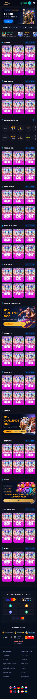
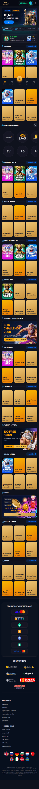
The bottom tab bar — mobile
node 1:8235
Casino, Live Casino, the raised Menu disc, Sport, Promos — icons, order and the
active state (Casino in gold, with the dot underneath) all match. It is not a drawer that
slides in: it is a bar pinned to the bottom, on every mobile page. The registry description
called it a navigation drawer; that is corrected in src/lib/screens.ts.
The bar no longer prefetches routes that do not exist — the three
index.txt?_rsc= requests that returned 404 on every load are gone.
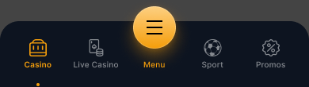
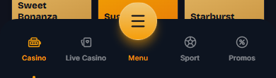
The Jackpot menu — logged-out visitor
node 1:8751
The Sport and Casino rows with their chevrons, the six account rows, the
Terms of Use strip plus the language, the Support and Vip Manager pills — same
order, same icons. It opens from the URL:
?auth=prelogin&panel=jackpotMenu.
One thing shows up on our side and not in the design: the blue focus ring on the panel's first control, here the close button. That is the focus trap moving the keyboard into the panel when it opens — standard accessibility behaviour, and a static Figma frame has no way to draw it.
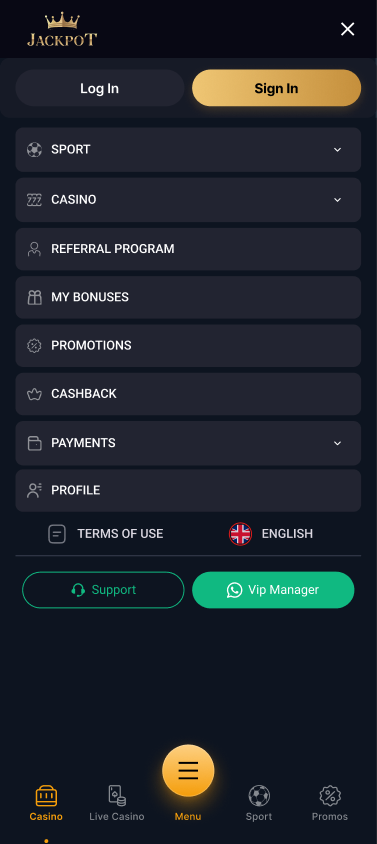
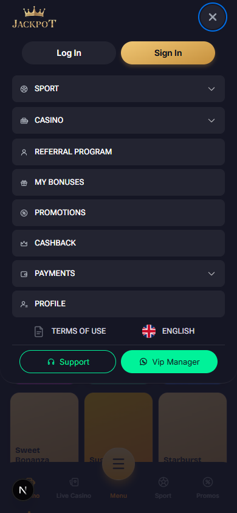
The Jackpot menu — logged-in player
node 1:8260
The structure is identical. Two things differ, both coming from the data, not from the
layout. Next to the badge the design says ID: 8847291, and in the
copyable field ID: 23885; our test data has no account number, so
what shows there is the identifier it does have — the reason is noted in the code, at
JackpotMenu.tsx:156-159. And the currency is GBP, your decision from the start.
The Sign out row — fixed. The earlier note said the tab bar was covering it. The measurement said otherwise: the panel is capped at max-h-[90vh] = 759.6px, and the bar starts at 760, so the panel already ended above it. The row was being cut off by the panel's own scroll — 804px of content in a 759 box. A bottom margin is added after the last row and cannot pull it up, so those 48px were taken out of spacing: the panel insets and four paddings inside the menu. The row heights and the 6px gaps that node 1:8503 pins down are untouched. Measured now at 390×844, in both motion modes: Sign out sits between 708 and 748, the panel is 757 tall against 756 of content — nothing scrolls any more — and the page stays 390 wide. The screenshots below are from before the fix.
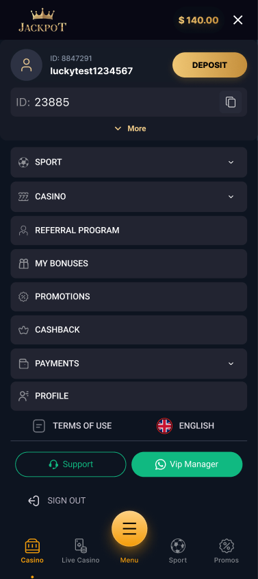
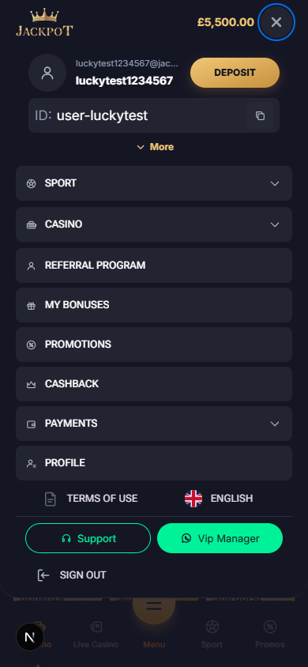
The Jackpot menu — VIP
node 1:8503The same rows as the logged-in player, plus the VIP badge and the green Vip Manager pill. The same two differences as above: the account identifier and the currency. The Sign out row was fixed along with the menu above: 708 to 748, no scrolling. The screenshot below is from before the fix.
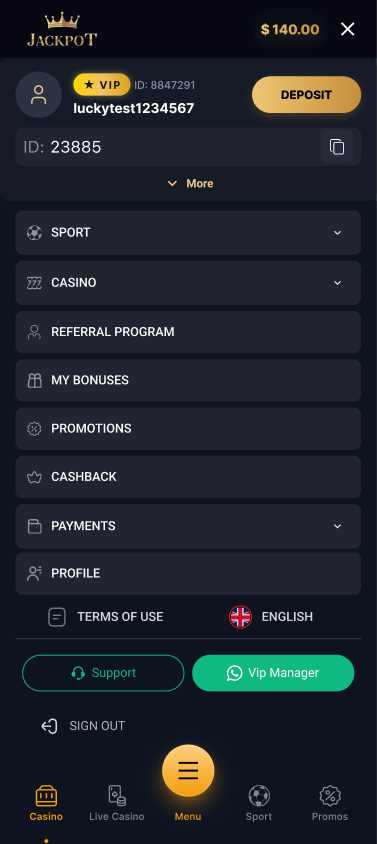
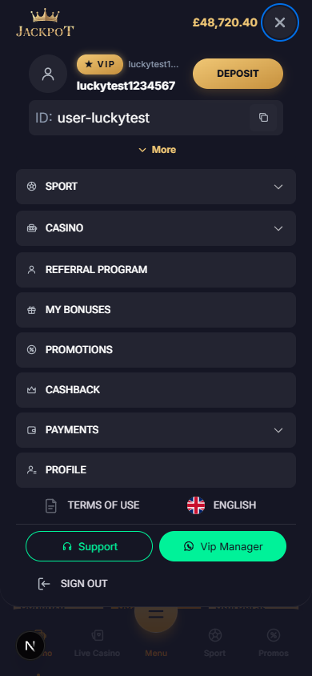
Provider search, no results — mobile
node 1:2218
Until now the magnifier in the Leading Providers row header opened the game search,
which it has nothing in common with apart from the glyph. Now it opens the row's filter: on
mobile the field is drawn under the header and takes the magnifier's place, exactly as in
node 1:2222. It opens from the URL with ?pq=xyzgame. Measured at 390: the field
358×44 on a 24 radius, #1A1D2E on #282936,
the clear button 28×28 on a 14 radius, the glyph 8px below the field, the page still 390 wide.
The deliberate difference: node 1:2218 keeps the logo strips under the message. On our side,
when nothing matches there are no logos left to draw — the strips would show a result the
message has just denied. The magnifier inside the field was grey on our side; now it is blue,
as in the design — search-blue.svg is node 1:2239's geometry redrawn, used only
by the provider field. Rasterised from the running page, the glyph measures
#007AFF at 390 and at 1440. One question is left for you: the Figma
export of the same glyph is #36BCFF, a light blue that is neither
the blue token nor the #00F0FF cyan.
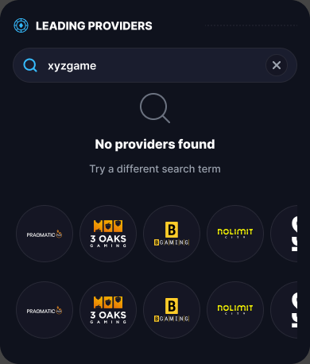
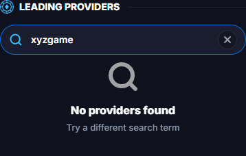
The whole desktop page
node 1:2431Header, hero, ticker, the category strip, all fifteen content sections and the full footer — payment methods, partners, the link columns and the ten flags. Measured at 1440: scrollWidth = 1440 in both motion modes, zero console errors. The category strip shows four pills where Figma draws six, but three of those are the same Jackpots repeated — it is noted in the code.
The screenshots are scaled down to 480px wide, and the frames scroll vertically — both go a lot further down than fits here. To see them at full size, right-click and choose Open image.
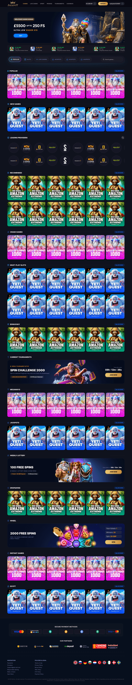
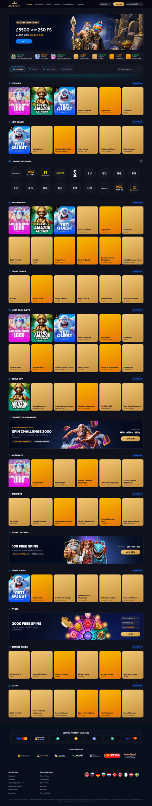
The Personal info panel
node 1:4153
Wallet, History, Invite Friends, Bonuses, Profile, Sign out — identical order, icons and
labels. It opens from the URL: ?panel=personalInfo. As with the other panels,
the first control gets the blue focus ring when it opens.
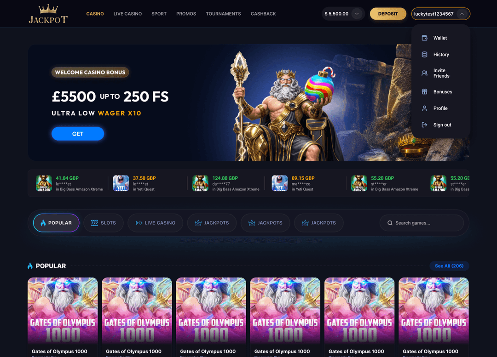
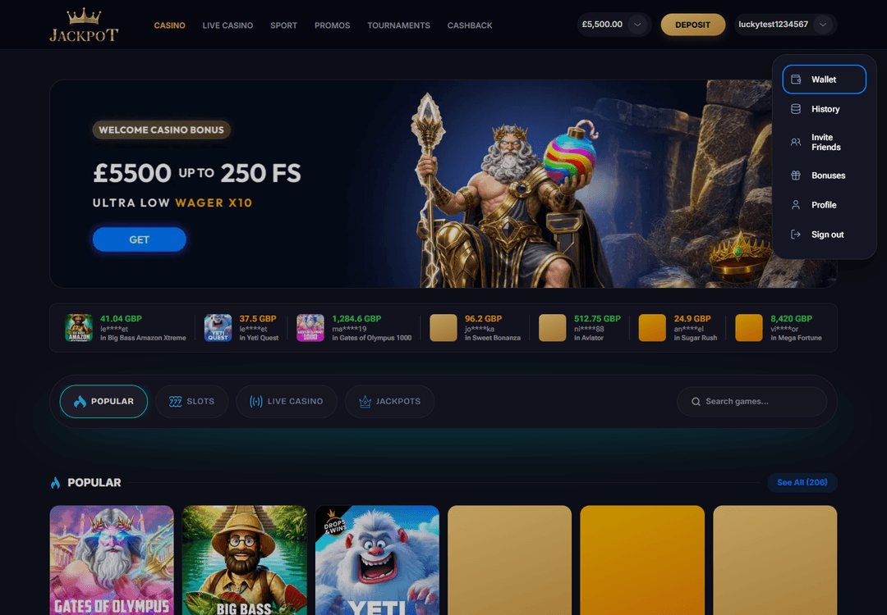
Search — popular and recent
node 1:4334The field focused, with an empty query: seven popular tags on two rows and four recent searches, each with its own delete button. The same words, in the same order as the design. The visible difference is the category strip again — four pills on our side, six in Figma, three of which are the same Jackpots.
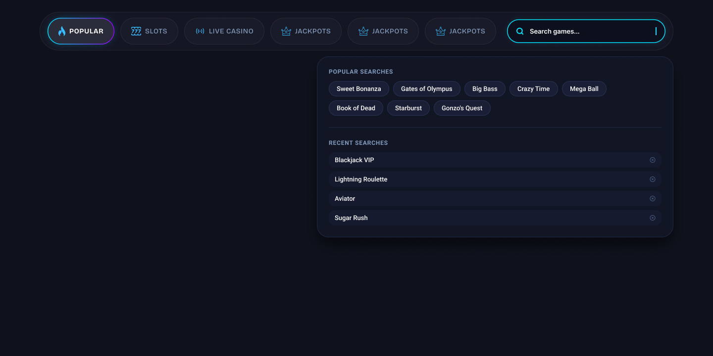
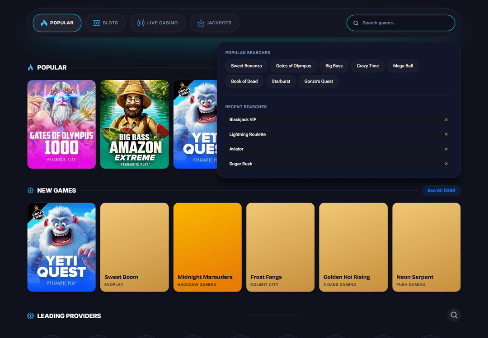
Search — no results
node 1:4611
No games found, Try a different search term or browse our categories below
and the Clear search button — the text, the icon and the button match word for
word. It opens from the URL: ?q=xyzgame.
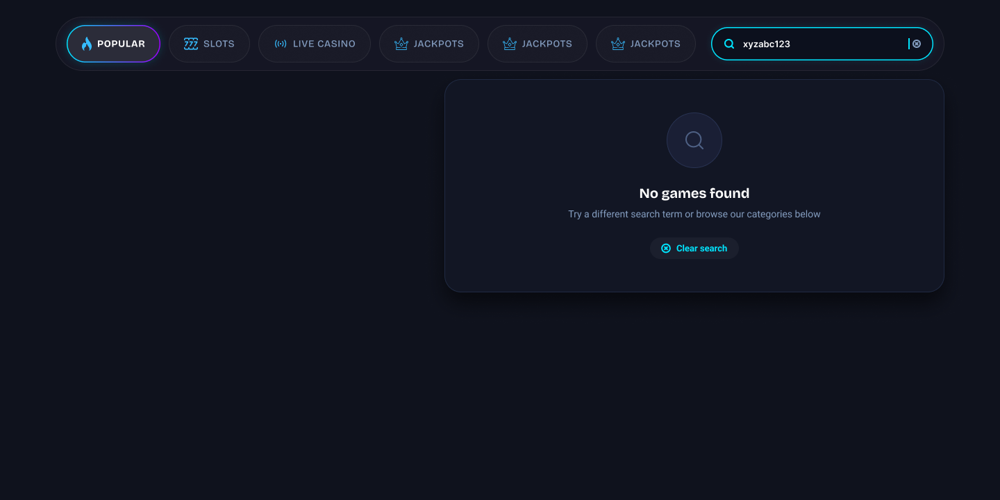
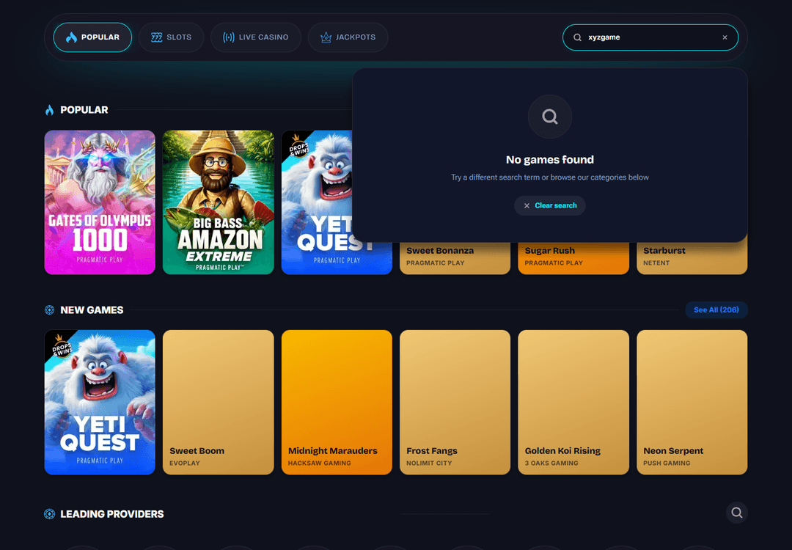
Provider search, no results — desktop
node 1:4321On desktop the same filter drops down as a 720px popover under the row's magnifier. The registry entry that used to be called empty-search and described no real screen is now providers-no-results-desktop, which is exactly what node 1:4321 draws.
Measured in the DOM at 1440: the popover is 720 wide, with a 1px border and 32 padding — so
the field comes out 654 wide, where Figma draws 656, because there the frame has no border.
Two pixels, from the border. The magnifier in the field is blue here too now, the same
search-blue.svg; the question about the #36BCFF in the
Figma export is the one above. The Figma frame is just the popover, with no page behind it —
that is why the screenshot on the left stops at its edge.
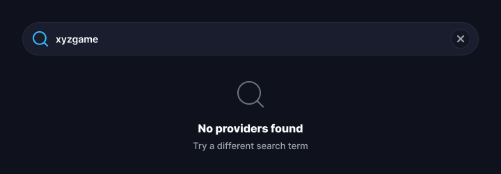
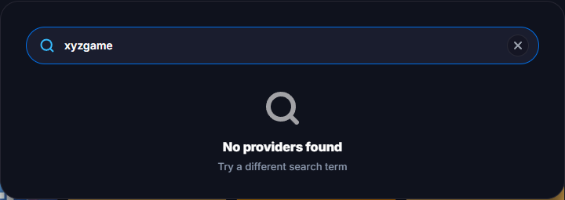
The category bar at 390
node 1:5799The one real defect that came out of the walk through the registry. At 390px you could see a single pill, Popular. The cause: the bar was drawing its own Search games… button, 244px wide, right there, even though on mobile search is the magnifier in the header and calls the same action. That left 136px for the pills, and Slots, Live Casino and Jackpots sat behind a horizontal swipe that nothing announced. Node 1:5799 has no search field in that row.
The button is hidden below 768px, and the pill got its mobile size from node 1:5799: 32px height, 14px inset, 12 text, 16 glyph, 6 gap. Re-measured today at 390, in both motion modes, the same numbers: the pills at 17–129, 135–226.1, 232.1–362.6 and 368.6–483.4, all 32px tall; the strip shows 372px out of 466 of content, so the last pill is visibly cut by the right edge — exactly what the Figma rendering does at 390 too — and the page stays 390 wide. At 1440 the bar is untouched: 54px pills, the button still 244 wide.
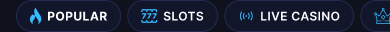
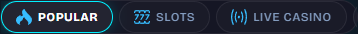
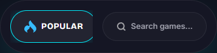
Accessibility — zero violations, checked automatically
axe-core 4.10.2 · 9 states
node scripts/a11y.mjs <director> opens nine states, injects axe-core from a
CDN and writes out the results. No new dependency in the project. The first pass reported
12–15 “serious” violations in every state; after the three decisions below not one is left,
at any severity. The numbers are nodes, not rules, and they come from today's run.
Mobile first.
| State | critical | serious | moderate | minor |
|---|---|---|---|---|
| mob-home (390×844) | 0 | 0 | 0 | 0 |
| mob-menu (390) | 0 | 0 | 0 | 0 |
| mob-menu-prelogin (390) | 0 | 0 | 0 | 0 |
| mob-providers-no-results (390) | 0 | 0 | 0 | 0 |
| desktop-home (1440×1000) | 0 | 0 | 0 | 0 |
| desktop-panel-balance | 0 | 0 | 0 | 0 |
| desktop-panel-personal | 0 | 0 | 0 | 0 |
| desktop-search-suggestions | 0 | 0 | 0 | 0 |
| desktop-providers-no-results | 0 | 0 | 0 | 0 |
Contrast. Every serious violation was the same
rule, color-contrast, coming from four colour pairs taken straight
from Figma. Your decision was to change the colours until they pass AA and to write the
deviation down. Each new value keeps the original's hue and saturation exactly; only the
lightness moved. The full table, with the Figma node and the composited background each ratio
is calculated against, is in docs/tokens.md §2b.
| Token | Figma | Now | Where you see it | Ratio |
|---|---|---|---|---|
| --blue | #007AFF | #006EE6 | white on solid blue: the Get pill in the mobile hero, the primary button | 4.02 → 4.80:1 |
| --blue-text | #007AFF | #479FFF | blue text on a tint: See All (206), the badges in the suggestions, the hero eyebrow | 3.51–4.06 → 5.15–5.97:1 |
| --text-legal | #65616A | #7F7A85 | the legal strip in the footer | 3.17 → 4.58:1 |
The blue tints keep the design's 0 122 255 channels: they are backgrounds, and darkening them would have made the very text they carry worse. The legal strip in the footer was not on the list of three pairs in the report, but it was a serious violation in every one of the nine states, so without it the check could not reach zero. The hover and pressed states of the See All pill were calculated as well, at 5.31:1 and 4.72:1, because axe only measures the resting state.
The page title. A single visually hidden <h1> that reads Jackpot — Online Casino, because the design has no title set in text — the logo is an image. It sits inside <main>: putting it above the landmark fixed page-has-heading-one, but lit up region, since content outside any landmark is itself a violation.
The check now runs on its own. On every push to main, the workflow builds the static export, serves it locally and runs the same nine states over it. If even a single critical or serious violation shows up, the build fails before publishing, and the a11y.json report is uploaded anyway, so it can be read. So the state in the table is not a snapshot of today: it is a condition every future release has to meet.
What stays open, by your decision.
The game and provider cards are not links. Measured on the home page, at 390 and at 1440
alike: 90 <article> elements and zero card links.
GameCard and ProviderCard accept an
href and become <a> when they get
one, but nobody passes it, because the demo has no game pages. You decided they should stay
<article> as long as that is the case: a link that goes
nowhere is worse than no link. When the game pages arrive, it sorts itself out. The axe rule
does not flag this, so the CI check stays green either way.
Desktop header
node 1:2432The only difference is the currency symbol: the design says $ 5,500.00, we say £5,500.00. That was your call from the start — the currency stays GBP. The logo is the vector exported from node 1:4250, not text set in a font.

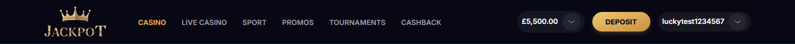
Hero, ticker and category bar — desktop
node 1:2433The screenshot on the right includes the header too, because it is taken from the real page. In the ticker, the first three wins have the real thumbnail; the rest have a gradient, because the design contains only three distinct game images.

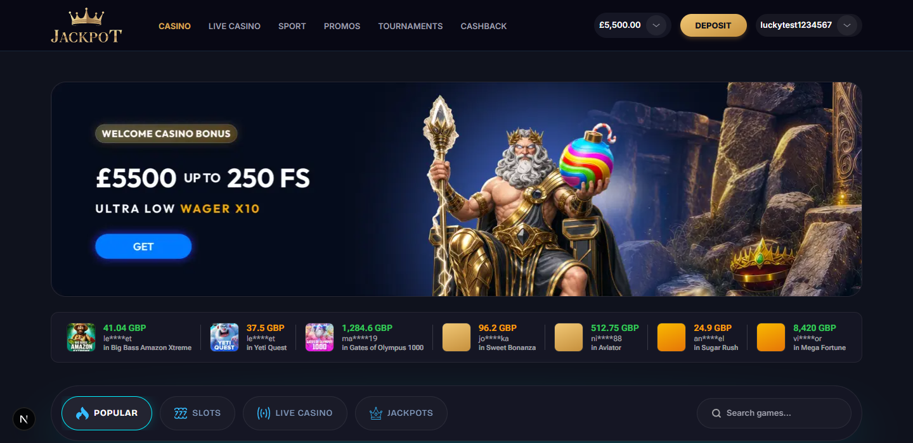
The Popular row — desktop
node 1:2592The heading, the dotted line, the See All (206) pill and the six-card grid all match. The content difference is the one you would expect: in Figma all six cards are the same image, on our side three are real and three are the gradients from the UI Kit, with the title and the provider written by us — because in the design the text is baked into the image, the card has no text node.

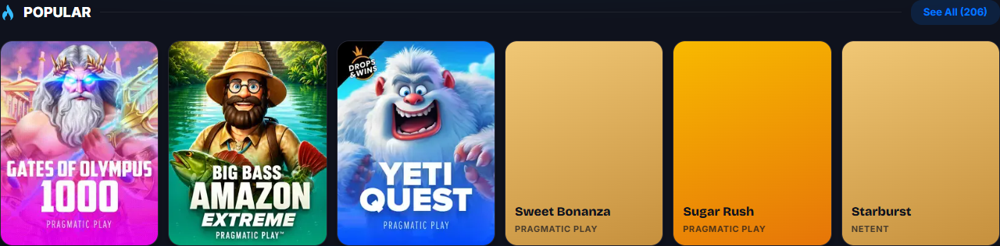
Leading Providers
node 1:2657
This is where checking it visually paid for itself. The search button in the heading rendered as a
giant magnifying glass spilling off the page. The cause: the file search-btn.svg was not
a button, it was a 20×20 SVG that contained the whole Figma canvas — a background rectangle and paths
with coordinates from −2254 to 8005. Replaced with the correct vector of node 1:2655.
The difference that is left is deliberate: providers without a logo get initials, where the design repeats
the same five logos fourteen times.

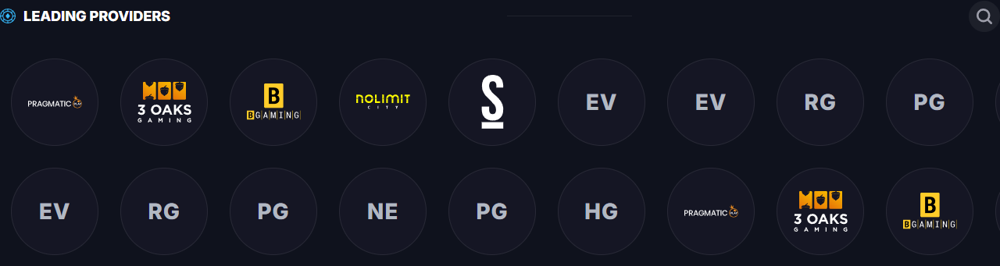
Current Tournaments
node 1:3427Eyebrow, title, subtitle, both pills, the countdown and the gold button. The countdown is derived from the end date in the data, not written by hand, so it really does run. The prize says GBP where Figma says RON — in the same design, the other two banners already say GBP.
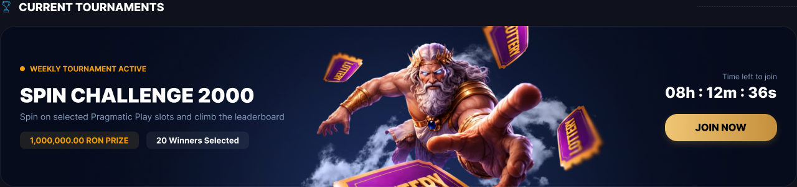
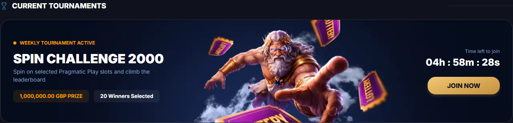
Weekly Lottery
node 1:3524
The content matched from the start — same title, same subtitle, same two
pills, same countdown. What did not match were four spacings and one colour. Measured on
node 1:3532: between title and subtitle 12, not 6; between subtitle and pills 12, not 16;
between the pills 8, not 12; between the timer and the button 16, not 20. And the amber behind
the pills is a second amber — Figma paints node 1:3538 with
rgba(242,193,70,.1), that is #F2C146,
not #F59E0B, the colour the text above it actually has.
docs/tokens.md had the value written down wrong; now --amber-tint says it
correctly, and that is the only pixel change the tournament banner got as well.


Wheel
node 1:3580
The three rows of stats — Your tickets, Winners, Spin —
did render, but they were a constant written into PromoRow. The wave 2 report
had said the data has no field for them; that was half true, because the missing
field made the very claim at the top of PromoBanner false, the one saying that everything
the design draws lives in the data. Now they live in tournaments.json, under
stats. Measured on node 1:3587: the row is 34px, not 40 — it is a
22px text box inside 6px of padding, not the line height that
text-lg has of its own — the gap between rows is 9, not 8, and their column
sits 24 from the button, not 20. The subtitle now wraps at the width of its own title, like
node 1:3591. The rule is not a general one: the other two subtitles run wider than
their titles and keep their maximum width.
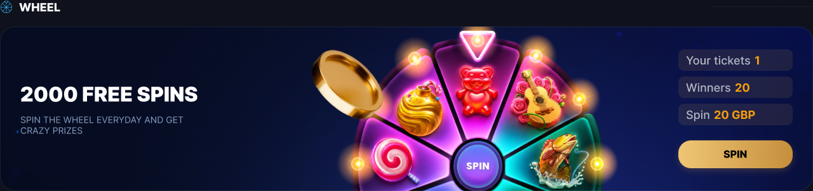
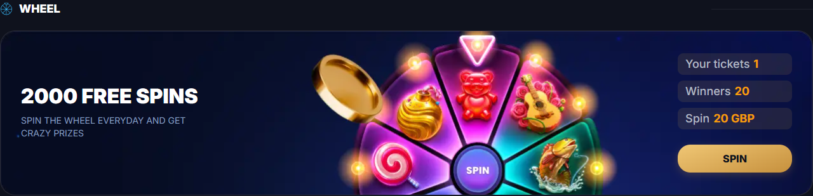
The promo banners on mobile — it was the desktop one squashed
nodes 1:6195, 1:6247, 1:6282
At 390px all three rendered the 1280×260 desktop composition squeezed into 339: the
JOIN NOW button was cut off by the right edge, Draw ends in ran over
the art, the pills sat on top of the characters, and the tournament row grew to 367px tall.
Figma draws something else there — nodes 1:6195, 1:6247 and 1:6282 are a 358×220 card
with the call to action tucked into a pill next to the timer. It is now PromoBannerMobile,
a second component and not a handful of mobile: rules on top of the first one:
different boxes, different text sizes, a different reading order.
Four differences are deliberate. The lottery keeps its own text, because node 1:6253 repeats the tournament copy inside the lottery card — SPIN CHALLENGE 2000. The clock shows hh:mm:ss, the three groups the rest of the site counts, where Figma writes four: 08:12:36:35. The art is the desktop image re-cropped — Figma feeds those frames a wider export of the same scene, 4:1 against the 4.92:1 ours has, so we can choose which third shows, but not how close. And the wheel subtitle says everyday where Figma has the typo EVERY DAT.
Two things only came to light when we measured. The fixed 160px line in the heading of the promo
rows refused to shrink at 390px and pushed the page out to 414px wide; node 1:6194
draws the elastic line on mobile, so SectionHeader now lets it get
shorter only below 767px, while on desktop it stays exactly 160. And the real tournament subtitle,
51 characters, wrapped onto three lines in the design's 190px column and pushed
the pill 9px below the 220 card; it is cut to two lines with an ellipsis, where
Figma puts the short copy Best Slots, Huge Wins!!.

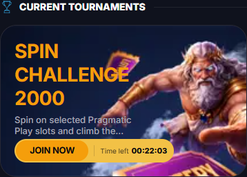

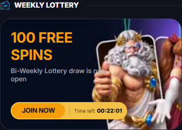

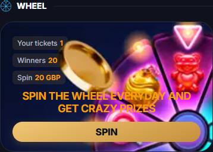
The seven game rows
nodes 1:3230, 1:3285, 1:3364, 1:3456, 1:3485, 1:3548, 1:3635
Crash Games, Must-Play Slots, Bonus Buy, Megaways, Jackpots, Drops & Wins and Egypt have
exactly the structure of Popular and they match: a 28px heading, See All (206), cards
of 203×264, one grid or two, exactly as sections.ts declares them. Six titles
out of seven match once they are uppercased.
What did not match were two icons. drops-wins (1:3551) and
egypt (1:3638) had come in as whole-subtree exports and
drew different art from the design: a burst of rays instead of the scalloped circle, a pharaoh
bust instead of the abstract dome. They are replaced with the single-leaf vectors,
read with get_design_context — the same lesson as with the search button.
Two differences remain. The bonus-buy icon (1:3367): Figma draws a crown over the BONUS banner, we draw three stars. It is not fixed, because in Figma the glyph is made of fifteen masked fragments, so there is no clean vector to export, and at 20px the difference is barely noticeable. And the title: node 1:3556 says literally drop&wins, which renders as DROP&WINS; we write DROPS & WINS, the readable English.
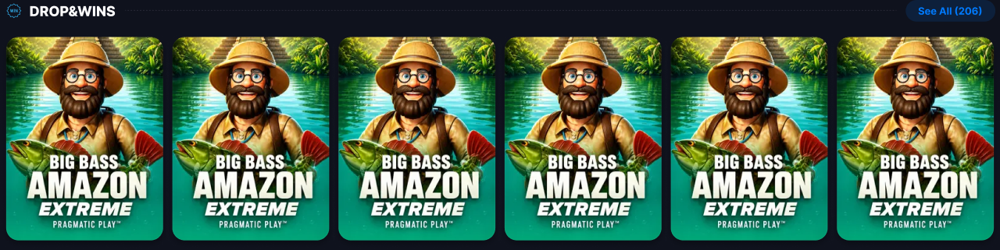
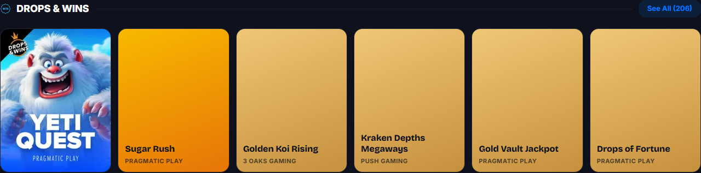
Footer
node 1:3666All seven payment logos and all seven partners render, including Deutschland Casinos, which had stayed undownloaded and showed up as partner-7. The ten language flags are list items, not links — there is no routing for them, and ten anchors that lead nowhere are worse for the keyboard than a plain list.
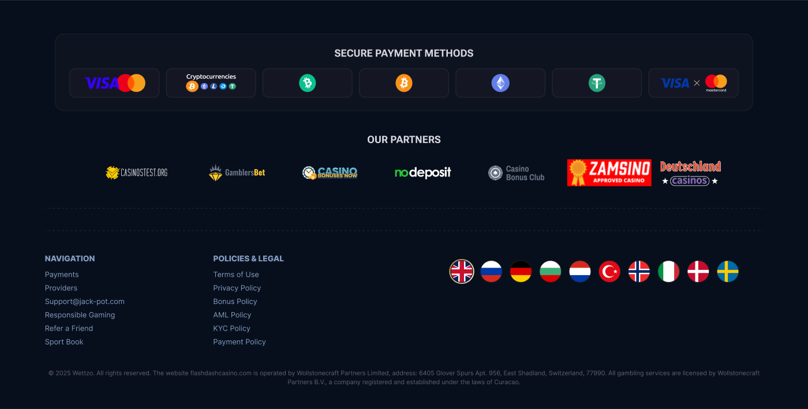

Search, the state with suggestions
node 1:4479
The content was right from the start — the same four games, the same providers, the same
category labels, read out of Figma, not invented. What was wrong was the layout:
the panel floated below the header, and the category bar underneath was showing at the same time
a second search field, closed. Now the field inside the capsule widens in place, gets
the cyan outline and the clear button, and the panel drops below it, aligned to the right.
Re-checked on 8 September 2026 on ?q=swe: the structure of the four rows is
the same, and the only mismatch left is one of content — the badge on the
Sweet Bonanza row says Popular where Figma says Slots. The badge takes
the game's first category, and in the test data the game has popular
before slots — it is the order of two words in the data, not layout.

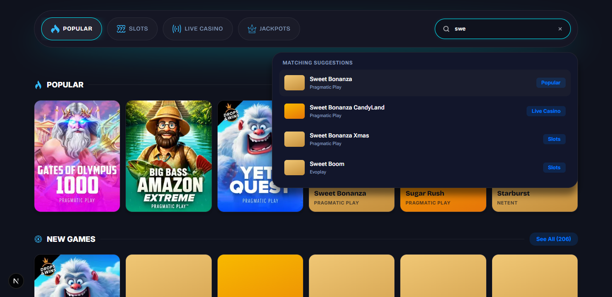
The Balance panel
node 1:4116
This is where something reading the code did not catch came to light: the panel could not be opened
from the address bar, because the state mirror in the URL, asked for in the plan, had never been written
and had never been flagged either. Six screenshots I had marked “verified” were in fact showing the
default page. Now ?panel=balance really does open it. The layer behind it went back
to 20% — at 80% the page behind it almost disappeared.
Re-checked on 8 September 2026, in both motion modes: the total, the real and the bonus
balance, the free spins queue and the Deposit button still match node 1:4116, and
the only thing that shows up on our side and not in the design is the blue focus ring on the
Deposit button, put there by the panel's focus trap.
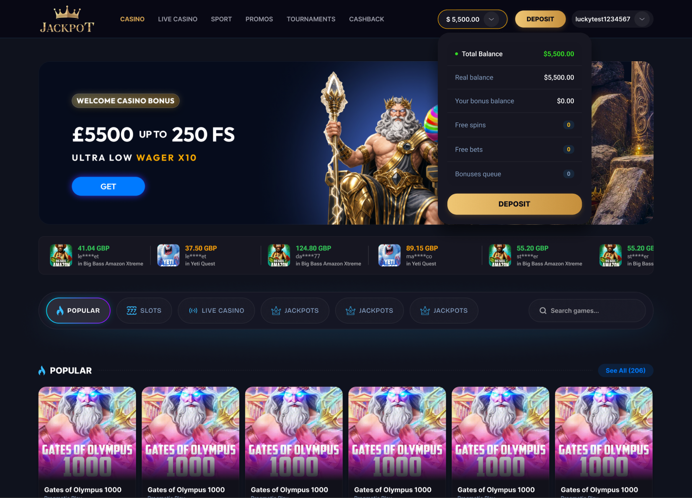
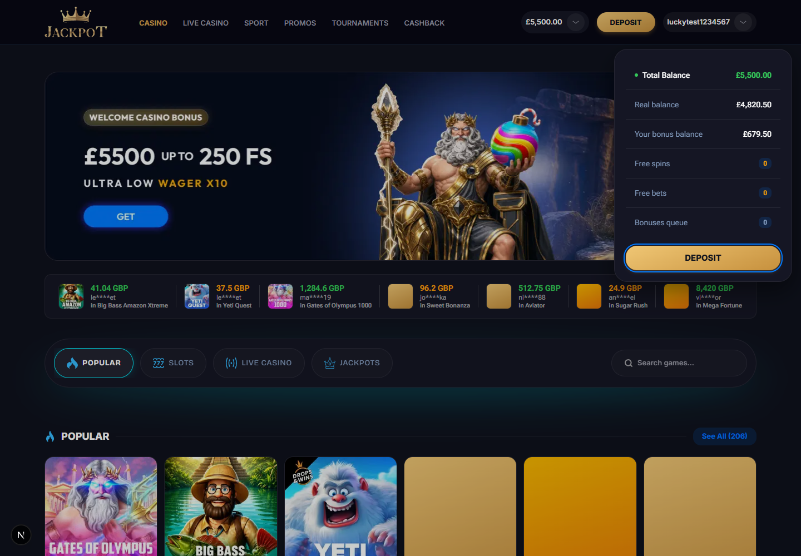
Mobile hero — it was the desktop composition shrunk
nodes 1:5750, 1:5751The most serious deviation we found. The mobile design is not a smaller version of the desktop one, it is a different composition: two separate pills instead of one, the £5,500 amount on a line of its own with UP TO 250 FREE SPINS underneath, a Get button, not GET. It has its own art too — node 1:5751, with a navy gradient background, Zeus framed differently and a violet shard in the bottom corner. The first attempt cropped the desktop image, which put the rocks and the gold crown from there in the background and could not produce the shard. Now it is the real image, exported at 3×.


The Popular row — mobile
node 1:5882The 3×2 grid was already right — the contradiction had been in my brief, and the agent flagged it instead of deciding on its own. What broke were the long titles: the text block is aligned to the bottom of a card with a fixed height that clips at the edge, so a title that needed a third line grew upwards and lost its first line. You could see it on Golden Koi Rising and on Frost Fangs. It is now capped at two lines, with the provider on a single one.
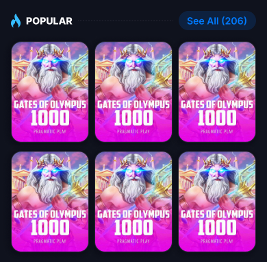

What got fixed after the first round of comparison
| ID | What it was | What it is now |
|---|---|---|
| V-1 | Mobile hero = the desktop composition shrunk | The composition of node 1:5750 plus its own art 1:5751, exported at 3× |
| V-2 | Long titles were cut off on the 114px card | Two lines maximum, provider on a single one |
| V-3 | 29 SVGs were carrying the Figma canvas | Cleaned up; the provider strip renders identically afterwards |
| V-4 | Interactive states never compared | All ten captured; it brought to light that the deep links were missing entirely |
| V-5 | Overlay at 80% everywhere | 20% on desktop, 80% below 768px — the only token with two values |
The site returned 500 on every route, even though the code was correct
During the check, the server started returning Internal Server Error on any
address. The code compiled without a single error. From the server log:
ENOENT ... _buildManifest.js.tmp.z5fzbd71okj.
The cause: I ran a production build while the development server was running, and both
write into the same .next directory. They stepped on each other and corrupted the manifest.
That prohibition was written into every agent's prompt. The one who broke it was the parent, which is me.
That is why the fix is not a reminder note: next.config.ts now reads
NEXT_DIST_DIR, and npm run build:check sends the build into a
separate directory. Verified: full build run, the server stayed on its feet.
What does not match and why that is fine
- Providers without a logo have initials — EV, RG, PG — where the design repeats the same five logos fourteen times.
- Cards without art have gradients with the title written on top, because in Figma the title is baked into the image and the card has no text node.
- The currency is GBP everywhere, where the design says $ or RON in places — your call from the start.
- The mobile hero shows a single offer. In Figma node 1:5749 is a track of three cards, but the second one starts at x=380 inside a 390 frame, so none of it is visible. A carousel would need a data source for offers, which does not exist.
Seen in Chrome, 9 September
Two sessions of measurements had already gone by — boxes, axe-core, scrollWidth — and the page still looked wrong. So this session looked at the site in Claude in Chrome, at 390 and at 1440, state by state, next to the Figma captures. The rig is one page with four 390×844 same-origin iframes, each with its scrollbar hidden: one capture = four phone screens, with zoom for detail. Because a downscaled JPEG swallows 16px icons, any "the icon is missing" is confirmed first with img.naturalWidth, not by eye.
B1 — the promo countdowns sat at 00:00:00
node 1:6195 · 202ba23tournaments.json carries the deadline from the design, endsAt: "2026-09-08T18:12:36Z", which is in the past, and the banners formatted it once on the server, through Math.max(0, …). Now nextCountdownEnd() rolls an expired deadline forward, in whole 7-day periods, at read time, and the new useCountdown hook reformats from Date.now() once a second in the client — which is why those two banners became client components. The capture on the right shows 164:03:23, live. The hours run to three digits because the period is a week, where the design writes 08h; a 24-hour period is a single constant to change, if you prefer the width from the design.
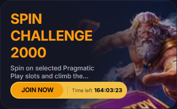
B2 — the lottery subtitle got lost in the artwork
node 1:6247 · 9efd153The initial diagnosis — "the text is underneath the image" — was wrong: document.elementFromPoint at the end of the line returns <p>, not <img>, so the text has always been painted on top and a z-index would have changed nothing on screen. The real defect was contrast: the word "now" falls on the lit phone in the middle of the scene, where text-subtitle measured 1.68:1 at 390. The fix sits behind the words — a radial scrim of --bg-card between the image and the body, anchored to the left edge. The wheel card is excluded by your decision (node 1:6282) and renders pixel for pixel identical. "now" now measures 6.50:1, the same in both motion modes. The capture on the left says SPIN CHALLENGE 2000 because node 1:6253 repeats the tournament text there — it is a deliberate difference, noted long ago; our text is the real lottery copy.
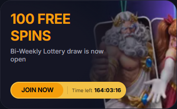
B3 — mobile search was a card floating over the header
f06e5aeAt 390 the search panel was a 358×384 card starting at y=16, which left a strip of header above it, with the balance pill cut in two. Figma has no mobile search frame at all — nodes 1:4334, 1:4479 and 1:4611 are all 1440 wide — so, by your decision, below 768px search takes exactly the shape of the Jackpot menu: Sheet with anchor="top". That is why the image on the left is the Jackpot menu frame: it is the reference shape, not a capture of search. Measured: [role=dialog] at top 0, width 390, not a pixel of header reachable behind it, focus trapped inside, Escape returns it to the magnifier in the header. Desktop is pixel for pixel identical.
Still open, from before: a click on the backdrop leaves focus on body. The same thing happens in the Jackpot menu drawer — it is in useOverlayBehavior/Sheet, not in search.
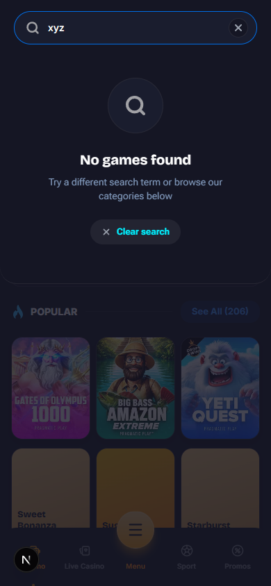
The search label read "Popular" instead of "Slots"
node 1:4579 · 5251402Came out of the systematic comparison of all 15 states. The label took categories[0], and games.json puts the "popular" curation tab first on the seven games that carry it — so Sweet Bonanza got "Popular" where Figma writes "Slots". Now the label prefers the genre category and falls back to the curation one, so the order in games.json, which the Popular tab depends on, stays untouched. The capture on the right is at 390; the node on the left is the 1440 panel, the only one Figma draws.
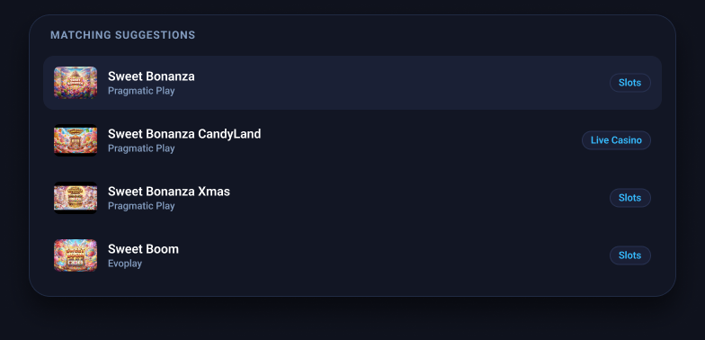
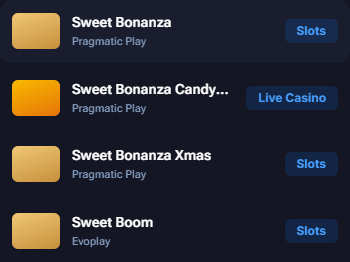
The mobile footer collapsed into a single column
node 1:6517 · 5251402The second difference the systematic comparison turned up. The mobile frame in Figma starts every row at x=8, not at x=16, and those 16px were exactly what kept two 160px payment tiles from fitting on a 316px row. After the alignment: tiles 2/2/2/1 at 160px, partners 3/3/1, "Navigation" and "Policies & Legal" side by side again with the 32px gutter, and the flags 5/5 instead of 6/4 — because on mobile they shrink to 32.2×31.7, the way Figma draws them. scrollWidth stays 390 in both motion modes, and the desktop footer at 1440 is unchanged (0 pixels different).
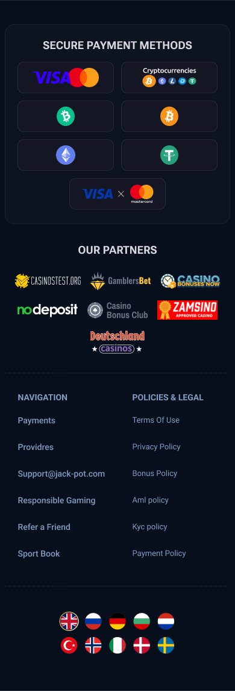
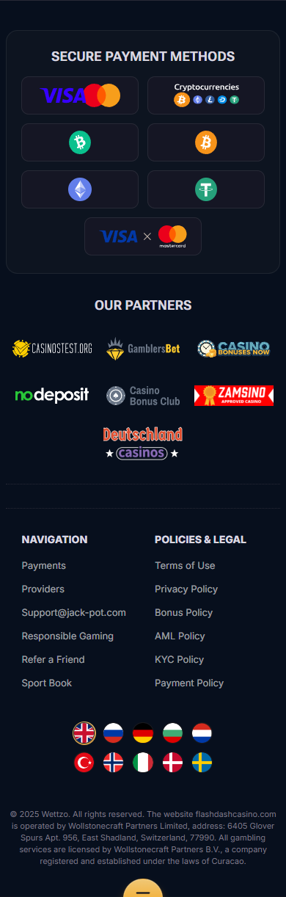
What looks odd but is exactly how the design draws it
- The dark 64×64 disc behind the Menu button in the tab bar (node 1:8235).
- The short rule in the Leading Providers heading.
- Invite Friends on two lines in the account menu (node 1:4153).
- The orange SPIN THE WHEEL text over the wheel (node 1:6282).
- The Sign out row is visible without scrolling in the Jackpot menu, both post-login and VIP.
Decision 2 of the day: the magnifier in the providers field is #36BCFF, the colour Figma exports on nodes 1:2239 and 1:4323 — not the blue token, not the cyan. It lives in public/images/icons/search-blue.svg and is noted in docs/tokens.md §2b. The open question about its colour closes here.
What's next
The demo is running. http://localhost:3000 for the platform,
http://localhost:3000/dev/screens for the screen register.
States can be opened directly: ?auth=vip, ?panel=balance.
Ten pairs compared, all of them match now. The visual check turned up three things that reading the code did not catch: the providers search button was showing a fragment of the Figma canvas, the mobile hero was the desktop composition shrunk down, and the state deep links did not exist at all — so half of my "verified" captures were showing the default page.
If you want anything else changed in the plan, annotate right on the page and send — it gets updated here, not in a parallel document.
The design direction of this page: the product's own design system — the palette from section 03, read from the UI Kit. I did not use an external library, precisely so the page looks like the product it proposes.